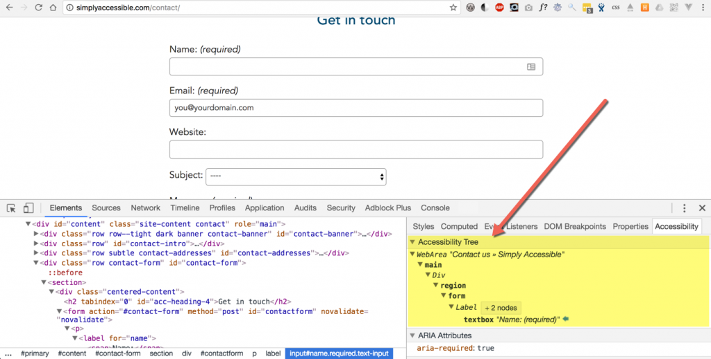

Le nom accessible en HTML
Introduction
Le nom (name) du composant d'interface est appelé aussi nom accessible (accessible name), c'est globalement ce nom qui va être exposé à la technologie d'assistance AT via l'API d'accessibilité (accessibility API). Ce nom est calculé par le navigateur via un algorithme appelé Accessible Name and Description Computation 1.1.
En fait, pour faire simple, le navigateur va générer un arbre accessible (accessibility tree) à partir du Document Model Object (DOM) dans lequel une grande majorité des éléments HTML (ceux qui n'ont qu'un but de présentation, ex. : balises div et span n'en ont pas l'utilité) ont besoin d'un nom (accessible) pour être correctement identifiés par l'AT.
Le nom accessible est issu du contenu d'une balise, d'attributs de cette balise ou d'un élément qui lui est associé.
En pratique, comment ça marche ?
Le nom accessible est, par exemple, annoncé par un lecteur d'écran à la prise de focus sur cet élément mais le rôle de l'élément est aussi ajouté (lien, graphique, bouton...).
Accéder au nom accessible via le navigateur
Pour accéder au nom (accessible), le plus simple est d'utiliser les outils des navigateurs.
Dans Chrome, il faut, dans les Chrome dev tools (Ctrl+ Maj. + i), inspecter un élément (onglet "Elements") et ouvrir le panneau "Accessibility" à la place de celui de "Style" (généralement à droite). On accède à l'"Accessibility tree" et dans "Computed properties" au "Name", le nom accessible de l'élément inspecté.

Dans FireFox, il faut, dans les dev tools (Ctrl+ Maj. + i), ouvrir l'onglet "Accessibilité" (à afficher les "Options" des dev tools), inspecter un élément. On accède au "Name", le nom accessible de l'élément inspecté.

Contenu d'une balise
<a href="canard.html">canards en plastique</a>
Ici, le nom du lien est le contenu (libellé) de celui-ci : "canards en plastique". Un utilisateur de lecteur d'écran à la prise de focus sur cet élément entendra : "canards en plastique lien". Pour un utilisateur de commande vocale, pour cliquer sur ce lien, dira : "cliquer canards en plastique lien".
Donc, un élément de ce type <button type=”submit”></button> sans intitulé, ne sera pas accessible, bien sûr !
Également, on peut additionner les éléments pour donner un nom.
<button type=”submit”>Acheter <img alt="le canard en plastique" src="canard.jpg"></button>
Ce bouton aura lui un nom accessible qui est le contenu du bouton : l'intitulé textuel, "Acheter " plus le alt de l'image : "le canard en plastique" donc "Acheter le canard en plastique".
Élément associé
Par ailleurs, pour les éléments de formulaire, le nom accessible est le label lorsqu’il est programmatiquement associé à l'élément via l'attribut for référençant l'id du champ.
<label for="search"<Rechercher>/label>
<input id="search" type="text">
Avec ce code, le lecteur d'écran dira : "Rechercher édition".
Avec ARIA aussi !
ARIA va pouvoir nous aider pour donner un nom à un élément HTML, en utilisant aria-label et aria-labelledby.
<button class="navbar-toggler" type="button" aria-label="Ouverture menu navigation" ... >
<span class="navbar-toggler-icon"></span>
</button>
Ce bouton de menu hamburger a donc un nom : "Ouverture menu navigation".
Mais on pourrait aussi utiliser aria-labelledby pour référencer un autre élément de la page comme nom :
<input type="search" aria-labelledby="this">
<button id="this">Rechercher dans le site</button>
Plus de détails sur "Les attributs ARIA qui peuvent vous sauver".
Webographie
- Accessible Name and Description Computation 1.1 par the Accessible Rich Internet Applications Working Group
- Demystifying accessible name par Joe Watkins
- What is an accessible name? par Léonie Watson